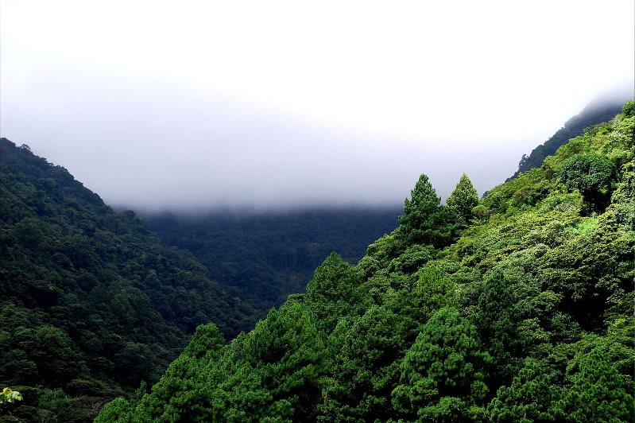

Parque Nacional La Tigra
El Parque Nacional La Tigra está ubicado en el departamento de Francisco Morazán,
aproximadamente a 15 kilómetros al noreste de Tegucigalpa.
El Parque Nacional La Tigra cuenta con una extensión de 24,040 hectáreas de bosque dividida
en zona de amortiguamiento y zona núcleo, que forma parte de la cadena montañosa central de Honduras.
El parque nacional es una fuente generadora de agua dulce y pura,
así como zona de refugio para la biodiversidad nativa y migratoria.
La Tigra tiene una gran variedad de flora y fauna, entre la vegetación se puede mencionar especies de árboles
como el Pino de Ocote, Robles, Encinos, Liquidámbar, Aguacatillos entre otros. También existe diversidad de helechos,
seis de ellos en peligro de extinción y los cuales son protegidos por Fundación Amigos de La Tigra, Amitigra.
Entre la fauna hay especies de mamíferos, anfibios, reptiles y aves. Especies como tigrillos,
guatusas, venados cola blanca, micos de noche, pumas y yaguaroundis viven dentro del parque nacional.
Aquí también podrá observar aves como jilgueros, pavas de montaña, quetzales, gavilanes, tucanes entre otras más.
Entre los reptiles se mencionan pichetes o lagartijas, tamagases negros y verdes, bejuquillas, corales y boas.
Los anfibios están representados por varias especies de ranas y sapos, pero éstos habitan en las áreas más húmedas del parque
